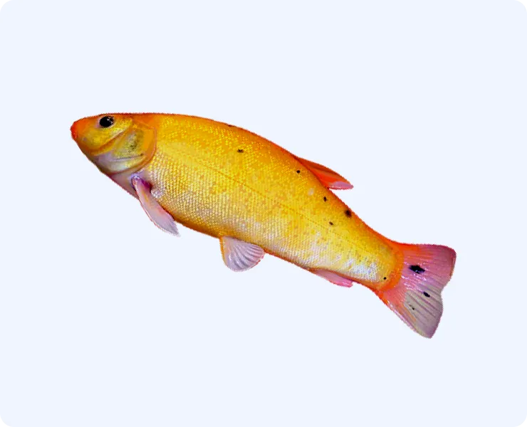

Рыба для пруда
Золотой линь
Цена и наличие
- 6-10 см21 BYN / шт.В наличии
- 10-15 см28 BYN / шт.В наличии
Данные на 23.11.2026.
Характеристики
- Внешний вид
- Имеет золотистый цвет и характерный слегка выпуклый профиль тела
- Сезонность
- Март-ноябрь
- Возраст
- Сеголетки, годовики
- Максимальный вес
- До 7.5 кг
- Продолжительность жизни
- Обычно 10–15 лет, при благоприятных условиях отдельные особи могут жить дольше
- Половая зрелость
- Обычно наступает в возрасте 3–4 лет, однако срок зависит от пола, температуры воды, кормовой базы и скорости роста. Самцы обычно созревают раньше самок
- Питается
- Преимущественно донными беспозвоночными: личинками водных насекомых, моллюсками, червями, мелкими ракообразными. Также употребляет зоопланктон, детрит и небольшое количество растительной пищи
- Температура воды для активного питания и размножения
- Наиболее активное питание и хороший рост наблюдаются примерно при 20–26 °C. Нерест обычно начинается после прогрева воды примерно до 19–20 °C, наиболее благоприятная температура для размножения — около 22–24 °C
- Условия пруда для содержания
- Лучше всего подходят стоячие или слабопроточные пресноводные водоемы с участками водной растительности, мягким или илистым дном и укрытиями. Золотой линь хорошо переносит временное снижение содержания кислорода, однако для нормального роста и здоровья необходимо поддерживать стабильное качество воды и хороший кислородный режим
- Рост
- Сеголетки 5-15 г, двухлетки 50-100 г, трехлетки 150-300 г
Описание
Золотой линь — пресноводная рыба, известная своим золотистым окрасом и выпуклым телосложением.
УСЛОВИЯ ОБИТАНИЯ
Золотой линь — декоративная цветовая форма обычного линя (Tinca tinca), поэтому по основным требованиям к условиям содержания практически от него не отличается. Главное отличие заключается во внешнем виде: окраска может варьироваться от светло-желтой и золотистой до насыщенной оранжевой или красноватой, иногда с темными пятнами. Лучше всего золотой линь чувствует себя в спокойных прудах со стоячей или медленно текущей водой, водной растительностью и мягким или илистым дном. Большую часть времени рыба проводит возле дна и среди растений, где находит естественный корм и укрытия. Постоянная проточность для содержания не требуется. Золотой линь способен переносить временное снижение содержания растворенного кислорода лучше многих других прудовых рыб. Однако это не означает, что его можно содержать в воде плохого качества: продолжительный кислородный дефицит ухудшает кормление, замедляет рост и увеличивает риск заболеваний и зимнего замора. Для содержания желательно наличие водной растительности, спокойных мелководных участков и более глубокой зоны для зимовки. Золотой линь — мирная рыба, поэтому его можно содержать вместе с обычным линем, карпом, кои, карасем, белым амуром и другими мирными видами при подходящей площади пруда и общей плотности зарыбления. Основное назначение золотого линя в частном пруду — декоративное. Благодаря яркой окраске он значительно лучше заметен в воде, чем обычный линь. При этом золотой линь не является специализированной рыбой для очистки пруда от водорослей, ила или высшей водной растительности.
РАЗМНОЖЕНИЕ
Золотой линь способен самостоятельно размножаться в обычном пруду, поскольку его размножение происходит так же, как у обычного линя. Для успешного нереста необходимы достаточно теплая вода и мелководные участки с развитой подводной растительностью. Половая зрелость обычно наступает примерно в 3–4 года, причем самцы могут созревать раньше самок. Нерест проходит в конце весны и летом после устойчивого прогрева воды. Он может начинаться примерно при 19–20 °C, а наиболее благоприятные условия наблюдаются при температуре около 22–24 °C. Золотой линь не строит гнезд. Самка выметывает большое количество очень мелкой клейкой икры непосредственно на подводную растительность и другие подходящие поверхности. Нерест порционный и может повторяться несколько раз с интервалами в течение продолжительного периода. После нереста взрослые рыбы не охраняют икру и молодь. Развитие икры происходит достаточно быстро: при температуре около 20 °C личинки могут вылупляться примерно через 3 суток, а не через несколько недель. Первое время молодь держится среди растительности, где находит укрытие и мелкий корм.
КОРМЛЕНИЕ
Золотой линь — всеядная донная рыба, а не растительноядная. Значительную часть естественного рациона взрослых особей составляют животные организмы, которые рыба находит на дне и среди растений. Золотой линь питается личинками водных насекомых, в том числе хирономид, моллюсками, червями, мелкими ракообразными и другими донными беспозвоночными. В рацион также входят зоопланктон, органический детрит и некоторое количество растительного материала. Молодь в первые периоды жизни больше зависит от зоопланктона и мелких беспозвоночных. Поэтому золотого линя не следует позиционировать как рыбу, которая активно очищает пруд от водорослей. Он может употреблять растительную пищу, но водоросли и высшая растительность не являются основой его рациона. При содержании в декоративном или хозяйственном пруду золотого линя можно дополнительно кормить качественными кормами для карповых и других всеядных прудовых рыб. Лучше использовать тонущие или медленно тонущие корма, поскольку значительную часть времени линь кормится возле дна. Наиболее активно рыба питается в теплой воде. Хороший рост молоди наблюдается примерно при 20–26 °C, причем при полноценном рационе повышение температуры в пределах этого диапазона может ускорять рост. По мере охлаждения воды кормовая активность уменьшается, поэтому количество дополнительного корма необходимо корректировать по температуре воды.
ЗИМОВКА
Золотой линь способен успешно зимовать в открытом пруду в климатических условиях Беларуси. По мере осеннего охлаждения воды его активность и интенсивность питания снижаются, после чего рыба перемещается в более глубокие и спокойные участки водоема. В холодной воде обмен веществ значительно замедляется. Зимой линь может находиться непосредственно возле мягкого дна и частично погружаться или зарываться в ил. Это не полноценная спячка: рыба остается живой и способной перемещаться, однако ее активность становится минимальной. Специальное зимнее кормление обычно не требуется. Главную опасность представляет продолжительный дефицит растворенного кислорода под ледяным покровом, особенно в небольших, сильно заиленных или заросших водоемах с большим количеством разлагающейся органики. Для надежной зимовки необходимо обеспечить достаточно глубокий незамерзающий участок и стабильный кислородный режим. При угрозе зимнего замора в небольших или плотно зарыбленных прудах рекомендуется использовать аэрацию. Весной после прогрева воды золотой линь постепенно возвращается к активному питанию.